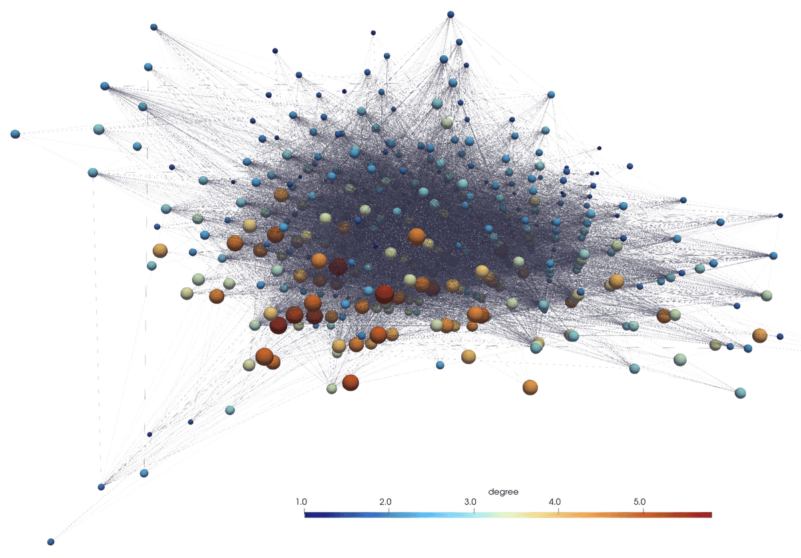
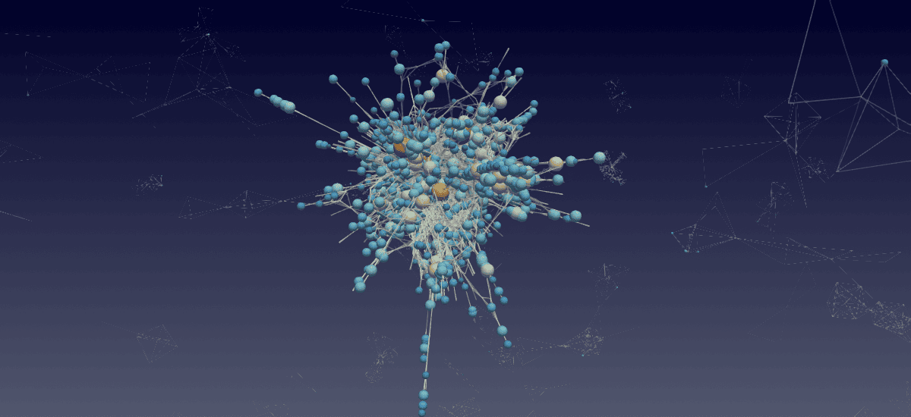

3D graph visualization
March 20th, as a footnote in “Network visualization with Gephi”
As graph size increases, 2D visualizations often turn into a giant hairball. Thousands of nodes and disconnected components crowd the screen, blend into visual noise, or hide behind one another. Using 3D helps spread the graph into an additional dimension and explore it through spatial rotation. Combined with GPU acceleration, this makes it possible to interactively work with millions of nodes and edges.
We propose an alternative approach to graph visualization: build the graph in Python as a networkx or networkit object, export it as a VTK file, and visualize it in ParaView. While this approach does not provide interactive graph-manipulation controls such as dragging nodes to refine the layout, it offers excellent scalability and can handle millions – and potentially billions – of nodes and edges.
Let’s see how we can visualize the nonlinear optical microscopy collaboration network with this approach.
Installation
uv venv ~/env-vtk --python 3.12 # create a new virtual environment
source ~/env-vtk/bin/activate
uv pip install pandas networks networkit vtk
...
deactivateCreate a network in Python
Traditionally, for this approach I’ve been using the NetworkX package, a popular open-source Python library for creating, analyzing, and visualizing graphs. It’s widely used in research and teaching because it’s very easy to use and extremely flexible. It is an older library and will struggle with force-based layouts for very large networks.
import pandas as pd
import networkx as nx
dir = '~/Documents/03-networks/'
cols = ['Id', 'Label', 'frequency', 'type', 'modularity_class']
nodes = pd.read_csv(dir+'nonlinearOpticalMicroscopy-nodes.csv', skiprows=1, names=cols)
cols = ['source', 'target', 'type', 'id', 'label', 'weight']
edges = pd.read_csv(dir+'nonlinearOpticalMicroscopy-edges.csv', skiprows=1, names=cols)
nodes.shape
edges.shapeNext, we need to convert all edges from labels to numerical IDs, as this is the format to be used in our VTK file:
node_mapping = pd.Series(nodes.index, index=nodes['Id']) # create a lookup mapping name -> numerical ID
edges['source_id'] = edges['source'].map(node_mapping) # replace all source names with numerical IDs
edges['target_id'] = edges['target'].map(node_mapping) # replace all target names with numerical IDs
listOfEdges = [] # will be a list of tuples
for i, row in edges.iterrows():
listOfEdges.append((row['source_id'], row['target_id']))We can now create a graph and populate it with nodes and edges:
G = nx.Graph()
G.add_edges_from(listOfEdges) # will automatically add the nodes too
print(len(G.nodes()), len(G.edges()))Create a layout
This is by far the most demanding part computationally. Force-directed layouts generally scale as \(O(n^2)\) for a single iteration, often resulting in \(O(n^3)\) scaling until convergence.
NetworkX was written in pure Python, so its force-based algorithms (like spring_layout, which uses the Fruchterman-Reingold algorithm) take forever for a large graph. They are still useful to play with, assuming a small number of nodes, but for a graph with tens of thousands of nodes you can speed it up by using any combination of the following:
- a library written in a compiled language, e.g. NetworKit (written in C++ with a Python frontend)
- multi-threading
- GPU acceleration, e.g. with cuGraph (part of NVIDIA RAPIDS)
- approximate algorithms, e.g. ForceAtlas2 (but that is only 2D …)
Here I will demo creating a layout with NetworKit. It has a few fast layouts, but some of these come with limitations. For example, my first choice would be nk.viz.MaxentStress but it can only do fully connected graphs (no separate pieces). For our example, I will use nk.viz.PivotMDS:
import networkit as nk
F = nk.nxadapter.nx2nk(G) # convert the NetworkX graph into NetworKit format
print(f"Nodes: {F.numberOfNodes()}, Edges: {F.numberOfEdges()}")
layout = nk.viz.PivotMDS(F, dim=3, numberOfPivots=5)
layout.run() # less than ideal result, but takes only ~1s
xyz = layout.getCoordinates()Store it as a VTK file
You will need writeNodesEdges.py that provides a writer for our graph in either vtkPolyData (default, extension .vtp) or vtkUnstructuredGrid (extension .vtu) format. Both nodes and edges will need to be supplied as lists.
from writeNodesEdges import writeObjects
help(writeObjects)
degree = [d for i,d in G.degree()]
writeObjects(xyz, edges=listOfEdges, scalar=degree, name='degree', power=0.333, fileout='network')Render in ParaView
- Load the file into ParaView
- Apply Glyph filter
- Glyph Type = Sphere
- Scale Array = degree
- adjust Scale Factor
- increase Glyph resolution
- Glyph Mode = All Points
- colour by degree
- Apply Tube filter to the original reader
- adjust Radius
- adjust Opacity

Examples of other layouts
Same network, another layout:
